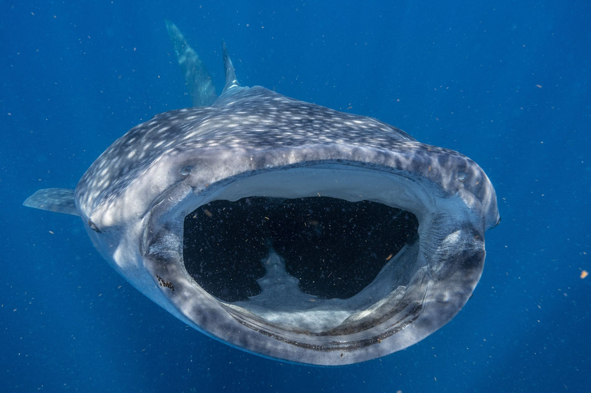
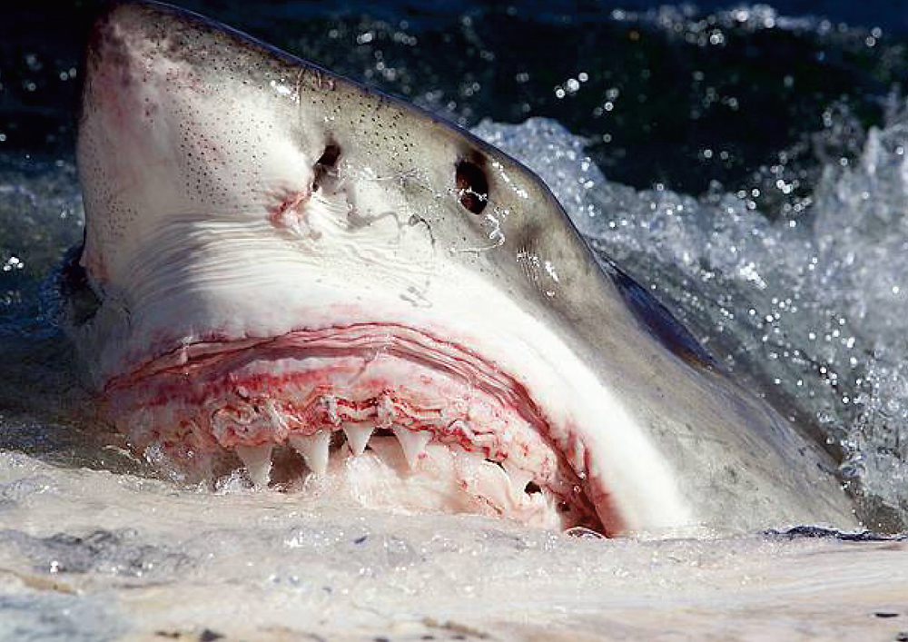

Bem-vindo ao mundo subaquático!
Explore criaturas incríveis e mistérios escondidos nas profundezas do oceano.
🐋 Curiosidades Marinhas

Tubarão-baleia
O tubarão-baleia é o maior peixe do mundo, podendo chegar a 18 metros de comprimento!

Tubarão-branco
Mesmo sendo temido, o tubarão-branco raramente ataca humanos e desempenha papel vital no equilíbrio marinho.

Tubarão-martelo
Seu formato peculiar de cabeça ajuda na caça, ampliando o campo de visão e a percepção de presas.

Água-viva
Algumas espécies de água-viva são imortais — elas podem regenerar células indefinidamente!

Golfinhos
Os golfinhos dormem com apenas metade do cérebro para continuarem respirando e atentos a predadores.

Estrela-do-mar
Uma estrela-do-mar pode regenerar braços perdidos, e até formar um novo corpo a partir de um só braço!

Peixe-lanterna
Esse peixe brilha no escuro graças a bactérias bioluminescentes que vivem em seu corpo.

Tartarugas-marinhas
Elas podem viver mais de 100 anos e viajar milhares de quilômetros durante a vida.

Peixe-leão
Apesar de lindo, é uma das espécies mais invasoras e venenosas dos oceanos tropicais.

Corais
Os recifes de corais são formados por pequenos animais chamados pólipos e abrigam 25% da vida marinha.

Lulas-gigantes
Essas criaturas misteriosas podem ter olhos do tamanho de pratos e alcançar até 13 metros!